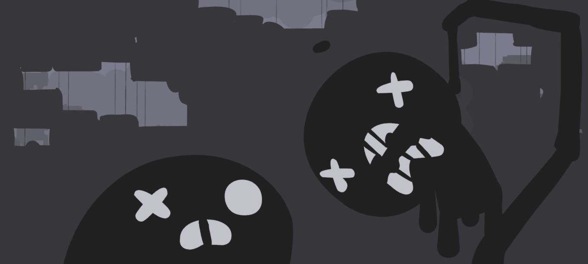
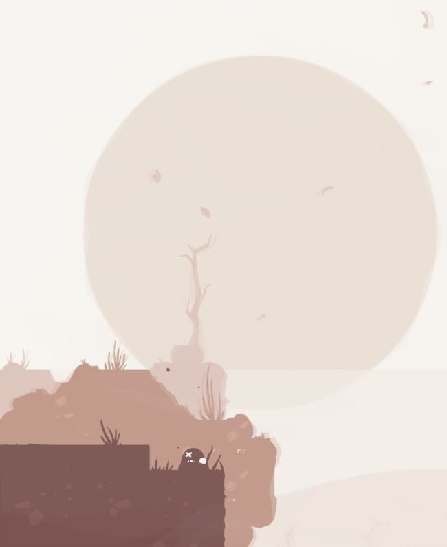
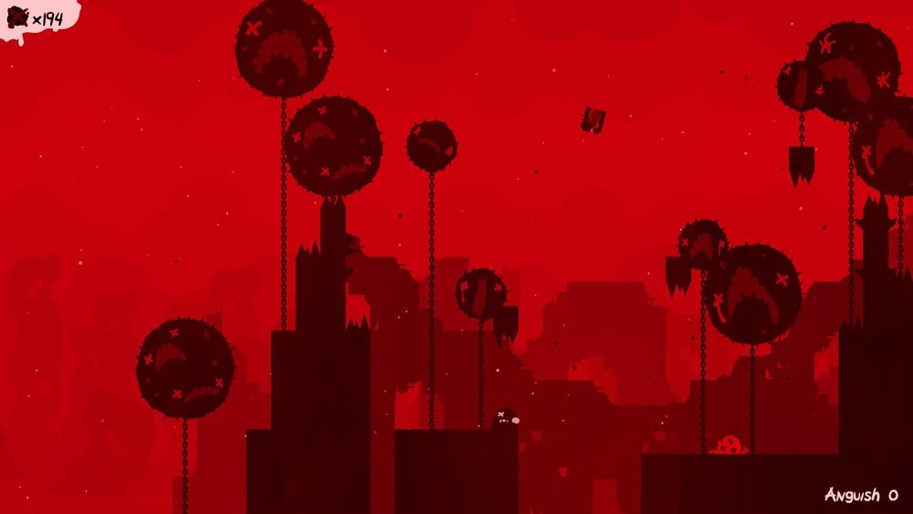
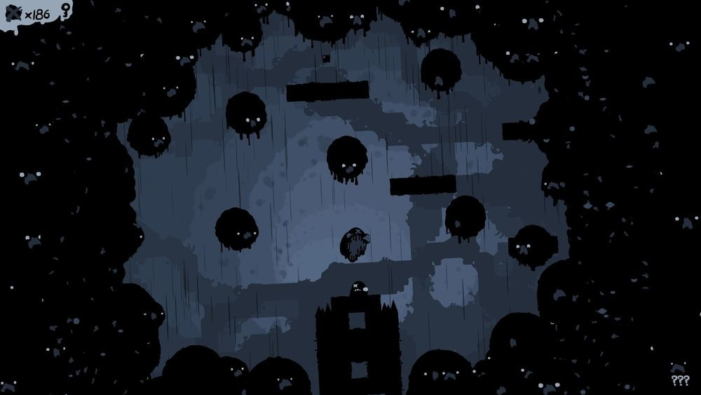

La trayectoria de Edmund McMillen se empezó a gestar con los juegos en flash
en el año 2001, llegando a obtener el primer reconocimiento
tres años después con 'Gish', un plataformas (uno de los géneros con los que más ha experimentado)
en el que manejábamos a un bicho formado por alquitrán.
Éste acabaría apareciendo como invitado de lujo, junto con otras creaciones suyas,
en 'Super Meat Boy' (2010), que le acabó catapultando a la fama.
Con 'The End is Nigh' vuelve, precisamente, a ese género,
demostrándonos porqué es en la actualidad uno de los maestros,
no sólo de los plataformas, sino del sector indie (a él le debemos 'The Binding of Isaac').
Estamos, pues, ante un juego que nos retrotrae a la época gloriosa de los noventa, pero aderezada
con muy mala leche para poner a prueba el límite de nuestra paciencia.
The End is Nigh: luchando contra la soledad

Es el fin. Literalmente. El mundo que conocemos se ha acabado, y Ash es uno de los
poquísimos supervivientes. Pero por suerte, no ha perdido toda la esperanza y su
intención es fabricarse él mismo a su propio amigo para tener alguien con quien
compartir su nueva vida. Algo que, como veremos, no será nada fácil.
'The End is Nigh' es otro plataformas marca de la casa.
Todo aquel que haya probado las últimas obras de Edmund McMillen
(o sus inicios bajo el recopilatorio 'The Basement Collection' de Steam) sabrá perfectamente
lo que se encontrará aquí: control exquisito, dificultad exigente y que aumenta de manera gradual,
y un universo podrido que parece sacado de la mente de alguien muy retorcido.
Como dijimos la semana pasada, con motivo de su lanzamiento, uno de nuestros objetivos primordiales será el recoger tumores a lo largo
del mundo, porque estos no solamente nos servirán para poder desbloquear fases extra desde las que obtener cartuchos
(minijuegos de toque retro y con guiños a clásicos de la cultura del videojuego), sino que tendrán una
importancia capital en el tramo final de la historia; cada fase tendrá un tumor,
mientras que en las secretas habrá cinco.
Las diferencias respecto a Super Meat Boy

En nuestro avance comentamos, de hecho, que "'The End is Nigh' no defraudará
a los que ansiaban otro juego en la línea de 'Super Meat Boy'", pero es importante
recalcar que ambos cuentan con diferencias notorias entre sí.
En la súper aventura del trozo de carne, las fases eran cerradas. Completábamos una
y desbloqueábamos la siguiente, viendo antes, además, nuestro tiempo (para compararlo con los demás)
y todas las muertes que sufrimos para tal fin. En la de Ash las fases están conectadas debido a que
estamos ante un mundo abierto.
Por ello no hay marcadores para cada fase, con lo que ya no habrá piques...
Los citados tumores se pueden comparar con las tiritas del anterior (salvo que aquí no desbloqueamos personajes),
mientras que Ash no rebota las paredes como sí hacía Meat Boy,
sino que se puede enganchar a los salientes de los bordes para
dar un salto más potente y lejano. Y además, no puede correr.
A medida que vamos desbloqueando capítulos, podremos acceder a ellos al instante.
Ahora bien, no podremos viajar directamente a una fase en concreto, como sí sucedía en
'Super Meat Boy', sino que habrá que recorrerla desde el principio (o desde el final).
Desde el mapa se nos mostrará toda la información relevante,
como los tumores conseguidos, cartuchos y secretos a conseguir.
La última genialidad de McMillen (y Tyler Glaiel)

Si bien Edmund McMillen lleva la mayor parte del peso en 'The End is Nigh',
sería injusto no mencionar al otro responsable de este trabajo, un viejo conocido suyo: Tyler Glaiel (autor de 'Closure').
Juntos ya habían trabajado, por ejemplo, en 'Aether' (2008), incluido en el citado
'The Basement Collection'. Además, McMillen repite con Ridiculon para la banda sonora,
como ya hizo con la abominable revisión de 'Super Meat Boy' para PS4 y un habitual de los
'The Binding of Isaac'.
En este caso, al contrario que en el fantástico trabajo de Danny Baranowsky,
Ridiculon se ha limitado a reinterpretar clásicos del siglo XIX,
como el vuelo del moscardón de Rimsky-Korsakov, o la danza húngara de Brahms,
por citar tan solo un par, restándole identidad a su música. No pararemos de tararearlas,
sí, pero le restará frescura al conjunto,
y es una pena viendo su fantástico diseño de niveles.
Porque McMillen y Glaiel han sabido exprimir al máximo las habilidades de Ash,
poniendo a prueba su capacidad de engancharse a los salientes
(en fases avanzadas tendremos que calcular al milímetro en plataformas con pinchos),
de romper paredes cuando lleve la suficiente velocidad; y también la nuestra,
claro está, al tener que memorizar el patrón de cada fase con peligros que, en ciertos casos,
recuerdan a todos los retos que nos había puesto el malvado Dr. Fetus.